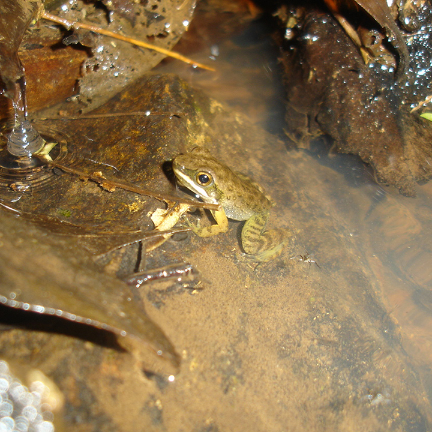

É uma pequena rã, ativa durante tanto durante o dia quanto à noite a depender da região, que habita rios rochosos que cortam áreas florestadas. Não possui veneno. Ocorre nos estados do Paraná, Santa Catarina e Rio Grande do Sul, além da Argentina e Sudeste do Paraguai. (mapa). Se alimenta de lesmas, formigas, larvas de besouros e de moscas, além de aranhas.
